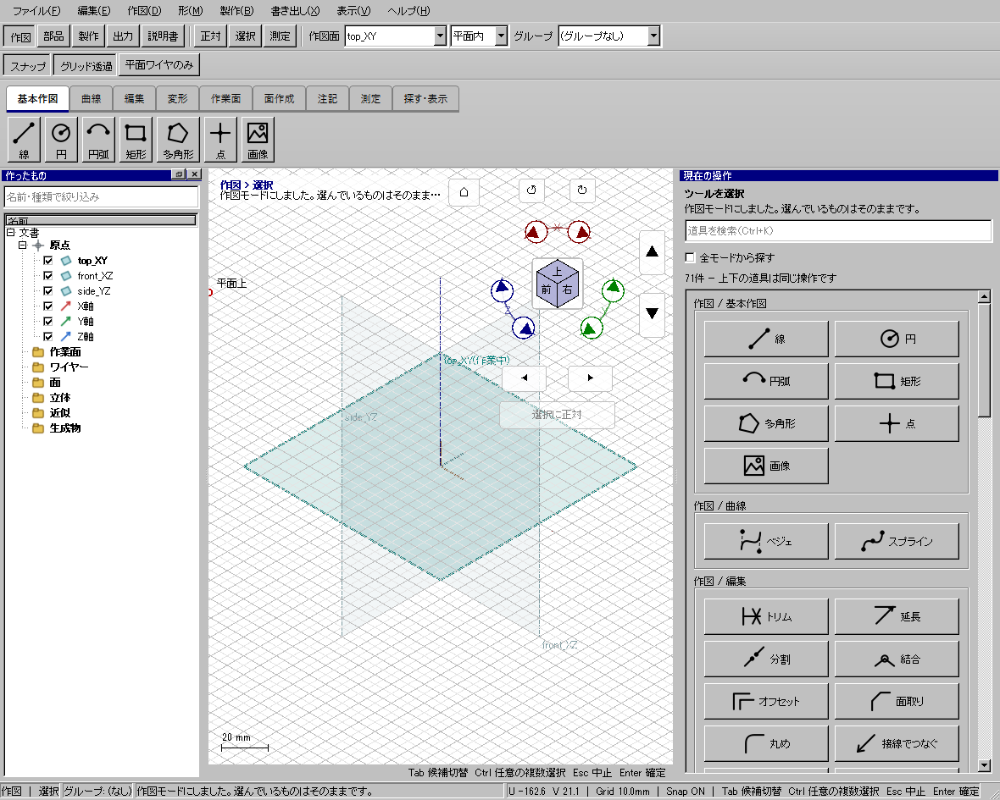

CADを通常起動する
黒いコンソールではなく、下の作図画面が表示されたことを確認して作業を始めます。
1 配布ZIPをフォルダーごと展開する
ZIP内のexeだけを取り出さず、DLL、platforms、manualなどを含むフォルダー全体を展開します。既存の配布フォルダーへ混ぜて上書きしないでください。
2 CAD本体を開く
展開先の
kachakacha_cad_next.exeをダブルクリックします。PowerShellのスクリプトを開く手順ではありません。ソース一式やビルド途中のフォルダーでなく、検証済み配布先のexeを使います。3 作図画面を確認する
上部に作図・部品・製作などのモード、左に作ったもの、中央にグリッド、右に現在の操作が表示されます。黒い画面だけで、これらが出ていない状態を起動成功とはしません。
4 最初の線を引く
上部の作図面をtop_XY、作図範囲を平面内にします。正対を押し、線を選びます。始点と終点を指定して線を作ります。座標を使う準備手順なら数値で同じ図形を作れます。
5 既存モデルを開く
ファイル→開くからKCD2を選びます。原本の修正を避けたい練習では先に別名保存します。作業中の旧版が別に開いている場合、未保存の図面を捨てないよう保存先を確認してください。

画面が出ない場合
| 症状 | 確認 |
|---|---|
| 黒い画面だけが出る | 古いコンソール版を開いていないか、配布フォルダー名とexeを確認します。今回のGUI版は通常起動でコンソールを作りません。 |
| DLLが見つからない | ZIP全体を展開したか、platformsフォルダー等がexeの隣にあるか確認します。exe単体を別の場所へ移動しません。 |
| 起動しているようだがCADが見えない | タスクバーでCAD本体を選びます。起動に失敗する版を繰り返し増やさず、配布版のフォルダーと発生状況を記録してください。 |